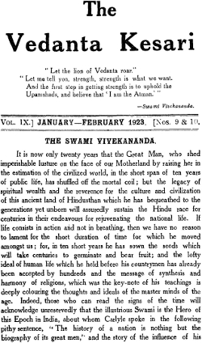

Background and Inspiration
तावत् गर्जन्ति शास्त्राणि जम्बुका विपिने यथा ।
न गर्जन्ति सटाक्षेपात् यावत् वेदान्तकेसरी ॥
All the other scriptures keep howling like jackals in the forest, until the Lion of Vedanta, shaking his mane, comes to the scene.
The Vedanta Kesari, meaning “Lion of Vedanta“, is a spiritual and cultural monthly in English published from Sri Ramakrishna Math, Chennai. The Vedanta Kesari is one of India’s oldest religious magazines in English in circulation. It has a monthly circulation of nearly 12,000 copies of which 4000 go to public and institutional libraries across India. The magazine has its subscriber-base in 40 countries.
In its 98th year, The Vedanta Kesari is one of India’s oldest religious magazines in English in circulation. It has a monthly circulation of nearly 12,000 copies of which 4000 go to public and institutional libraries across India. The magazine has its subscriber-base in 40 countries.The Vedanta Kesari contains articles on Indian spiritual traditions and scriptures, mainly focusing on Vedanta as expounded by Swami Vivekananda, the illustrious disciple of Sri Ramakrishna. The focus of the magazine is to promote a spiritual and matured outlook towards life. It advocates renunciation of selfish desires along with the service to others in a spirit of worshipfulness. Most articles published in the The Vedanta Kesariare originally written for the magazine, though a few transcriptions of the lectures and speeches are also published.
Editors of The Vedanta Kesari
From May 1914 to April 1928, there was no name of the editor mentioned. Towards the end of the April 1926 issue, page 478 it was mentioned in the News and Reports.
Swami Sharvananda who has been the President of the Ramakrishna Math and Mission in Madras since 1911 and has been editing the Vedanta Kesari from its very start is retiring from work after nineteen years of strenuous labour. He means to lead at present a life of perfect solitude and retirement.
Swami Yatiswarananda who has been in charge of the Ramakrishna Ashrama in Bombay for nearly the last two years has come over to take charge of the Math and Mission in Madras. He has spent eight years of his monastic life in South India and has an intimate knowledge of several of its parts. He is the late editor of the Prabuddha Bharata and is well-known for his scholarship and literary abilities. He was also intimately connected with the editorial work and the publication of the Vedanta Kesari for a long period. Our Journal will appear under his editorship from May next. All official correspondence must hereafter be addressed to him. We pray to the Lord to crown his work with complete success.
From May 1928 onwards, The Vedanta Kesari started printing the names of the editors. It would mention both the names (president of Madras Math and the actual editor) as 'Editors'. September 1993 onwards, nomenclature was changed over to 'Managing Editor & Editor'
Annual Numbers - Special Issues
Fifty three annual numbers (special issues) have been brought out till now. These issues contains article pertaining to subjects spanning various disciplines.